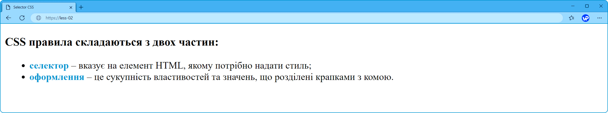
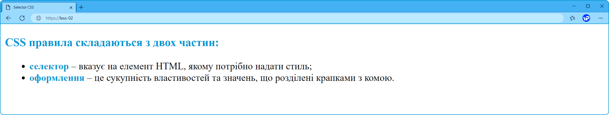
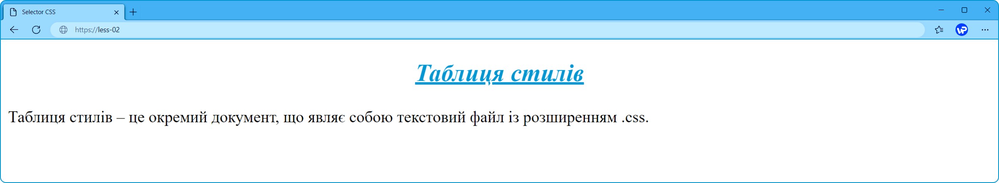
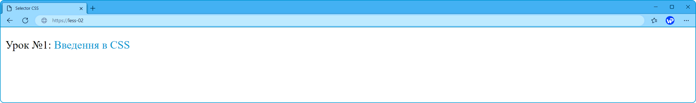
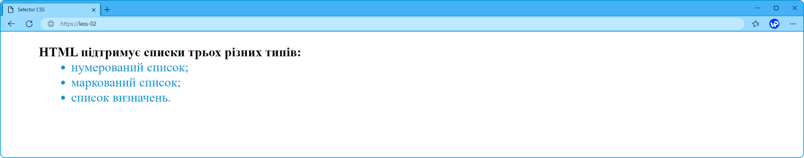
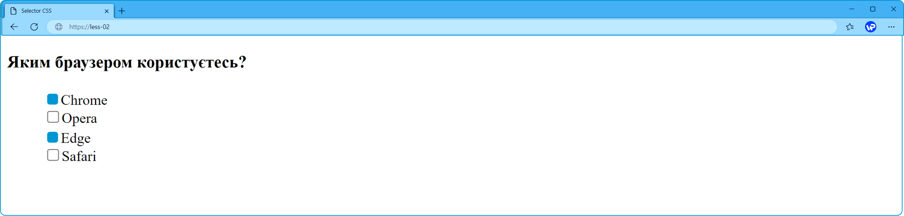
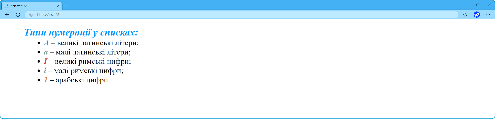
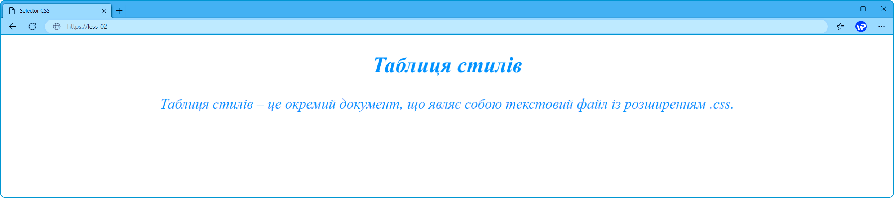

CSS селектори
Селектор – визначає до якого HTML-елемента буде застосований стиль CSS. Селекторами можуть бути HTML-елементи, їх класи та ідентифікатори, а також псевдокласи та псевдоелементи.
Селектор елемента.
Селектор елемента або селектор тегу встановлює форматування для всіх подібних елементів на веб сторінці.
<h3>CSS правила складаються з двох частин:</h3>
<ul>
<li> <span>селектор</span> – вказує на елемент HTML, якому потрібно надати стиль;</li>
<li> <span>оформлення</span> – це сукупність властивостей та значень, що розділені крапками з комою.</li>
</ul>span {
color: #0096D2;
font-weight: bold;
}
Якщо у CSS-правил відрізняються тільки селектори, а властивості і значення однакові, їх можна згрупувати через кому.
h3, span {
color: #0096D2;
font-weight: bold;
}
Селектор ідентифікатора.
Ідентифікатор – це глобальний атрибут, який надає елементу унікальне значення (ім’я), яке може належати тільки цьому елементу. Це значення використовується для вирішення ряду задач: створення посилання-якоря, надання унікальних стилів, встановлення певних сценаріїв поведінки.
В CSS, щоб вибрати ідентифікатор елемента, треба перед його іменем поставити символ хешу (#).
<h1 id="title">Tаблиця стилів.</h1>
<p>Здебільшого, таблиця стилів – це окремий документ, що являє собою текстовий файл із розширенням .css.</p>#title {
text-align: center;
font-style: italic;
text-decoration: underline;
color: #0096D2;
}
Селектор класу.
Селектори класу дозволяють задавати стилі для одного чи більше елементів з однаковим ім'ям класу, що розміщені в різних місцях сторінки або на різних сторінках сайту.
Щоб вибрати елементи з певним класом, напишіть символ точки (.), за яким слідує ім'я класу.
<p>Урок №1: <a class="link" href="https://webportal.com.ua">Введення в CSS</a></p>.link {
text-decoration: none;
color: #0096D2;
}
Селектор атрибуту.
Селектори атрибутів вибирають елементи на основі імені атрибуту або його значення.
<ul type="none">
<li span="title">HTML підтримує списки трьох різних типів:
<ul type="disc">
<li span="list">нумерований список;</li>
<li span="list">маркований список;</li>
<li span="list">список визначень.</li>
</ul>
</li>
</ul>[span] {
font-weight: bold;
}
[span = "list"]{
font-weight: normal;
color: #0096D2;
}
Селектор псевдокласу.
Псевдокласи – це класи, які дозволяють застосувати CSS-правила до елементів під час здійснення події або підпорядковується певному правилу.
<form>
<h3>Яким браузером користуєтесь?</h3>
<ul type="none">
<li><input type="checkbox" name="browser" value="Chrome" checked>Chrome</li>
<li><input type="checkbox" name="browser" value="Opera">Opera</li>
<li><input type="checkbox" name="browser" value="Edge">Edge</li>
<li><input type="checkbox" name="browser" value="Safari">Safari</li>
</ul>
</form>input[type="checkbox"]:checked{
appearance: none;
width: 12px;
height: 12px;
background-color: #0096D2;
border-radius: 3px;
transform: translateY(3px);
}
Селектор структурних псевдокласів.
Структурні псевдокласи відбирають дочірні елементи відповідно до параметра, зазначеного у круглих дужках.
<ul type="none">
<li><span class="title">Типи нумерації у списках:<span>
<ul type="disc">
<li><span>A</span> – великі латинські літери;</li>
<li><span>a</span> – малі латинські літери;</li>
<li><span>I</span> – великі римські цифри;</li>
<li><span>i</span> – малі римські цифри;</li>
<li><span>1</span> – арабські цифри.</li>
</ul>
</li>
</ul>.title {
font-size: 20px;
color: #0091ff;
}
span {
font-weight: bold;
font-style: italic;
}
ul[type="disc"] li:first-child span{ /*перший дочірній елемент*/
color: #1e90ff;
}
ul[type="disc"] li:last-child span{ /*останній дочірній елемент*/
color: #d27f46;
}
ul[type="disc"] li:nth-child(3) span{ /* третій дочірній елемент */
color: #cf432e;
}
ul[type="disc"] li:nth-child(even) span{ /* парні дочірні елементи */
color: #6ca38c;
}
Спадкування стилів.
Спадкування полягає в тому, що елементи успадковують властивості свого батька (елемента, що їх містить).
Специфікацією CSS передбачено успадкування властивостей, які стосуються текстового вмісту сторінки, таких як color, font, letter-spacing, line-height, list-style, text-align, text-indent, text-transform, visibility, white-space та word-spacing.
Властивості, що стосуються форматування блоків, не успадковуються.
<div>
<h2>Tаблиця стилів.</h2>
<p>Здебільшого, таблиця стилів – це окремий документ, що являє собою текстовий файл із розширенням .css.</p>
</div>div {
font-style: italic;
text-align: center;
color: #0091ff;
}